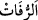
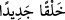
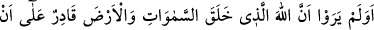
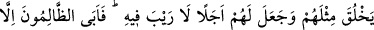
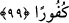

et-Te’vîlât’ta şöyle der: Onlar hırs ve şehvet cehennemindeydiler. Hazlarını tam
olarak aldıkları için şehvet ateşi her dindiğinde bir başka şehvetin ardına düşerek
alevini artırdılar. Haşre ve yeniden diriltilmeye inansaydılar dünya ve onun
şehvetlerinin hırsı cehennemine dalmazlar, peygamberlerin (aleyhimü’s-selam) getirdiği
açık delillerden yüz çevirmezlerdi.
Mesnevî’de şöyle der:
Harislerin göz testisi dolmadı.
Sedef, kanaatkâr olduğundan inci ile doldu.
“Ve” şiddetle inkâr edenler: “Sahi bizler, bir kemik yığını ve kokuşmuş toprak
olduktan sonra yeni bir yaratılışla diriltilmiş mi olacağız?” demişlerdir.”
“ __WORD__ ” moloz, kırılmış parçalar demektir. Mücâhid bunu toprak diye tefsir etmiştir.
“ __WORD__ ” ‘yeni bir diriltilişle diriltilmiş mi olacağız?’ ya da ‘yeni baştan mı
yaratılacağız?’ demektir.
99. Gökleri ve yeri yaratan Allah’ın kendilerinin benzerini yaratmaya kadir
olduğunu görmediler mi? Allah, onlar için bir vâde takdir etti. Bunda şüphe yoktur.
Ama zalimler, inkârcılıktan başkasını kabullenmediler.
Bu denli büyüklüklerine rağmen “Gökleri ve yeri” yoktan “yaratan Allah’ın
kendilerinin benzerini” kendileri gibi küçük olan şeyleri “yaratmaya kadir olduğunu
görmediler mi?” yâni düşünüp bilmediler mi?
Âyetteki “misl (benzeri)” kelimesi zâiddir. Kâşifî şöyle der: “Misl, kelimesi bir şeyin
kendisini ifâde etmek için kullanılır. Meselâ ‘Senin mislin böyle yapamaz.’ derler.”
Âyetteki ikinci ‘yaratma’ ile öldükten sonra diriltme kasdedilmiştir.
“Allah, onlar için bir vâde takdir etti. Bunda şüphe yoktur.” Bu cümle “görmediler
mi?” cümlesine atfedilmiştir. Çünkü bu ifâde “elbette gördüler” anlamında bir
kuvvettedir. Yâni muhakkak gökleri ve yeri yaratanın insanlardan benzerlerini
yaratmaya kadir olduğunu bildiler. Onlar için ve yeniden diriltilmeleri için kesin bir
vâde koymuştur ki bunda şüphe yoktur. O da kıyâmet günüdür.
Kâşifî şöyle der: “Doğrusu Hak Teâlâ onların fenâsı için bir müddet takdir etmiştir ki
bunda hiç şüphe yoktur. O zaman ölüm zamanıdır. Ya da onları yeniden yaratma
cihetinden bir vakit koymuştur ki o vakit kıyâmettir.”
“Ama zâlimler,” hakka boyun eğmekten imtinâ ettiler ve “inkârcılıktan başkasını